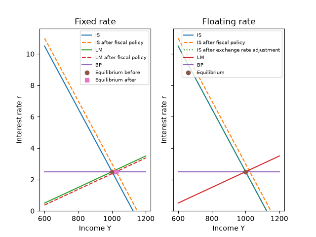
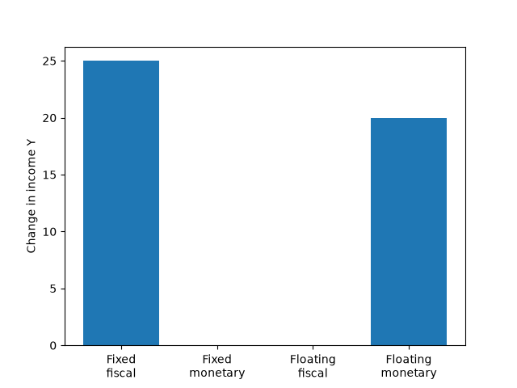

第 14 章: マンデル・フレミング・モデル¶
14.1 この章の地図¶
第 8・9 章の IS-LM は、閉じた経済（外国との取引がない経済）でした。この章では、外国と資本が自由に行き来する小さな国（小国開放経済）に、IS-LM を広げます。資本が自由に動くと、国内の利子率は、世界の利子率 r* に、引き寄せられます。このとき、政策の効果は、為替制度で、逆になります。
- 固定相場: 財政政策は有効、金融政策は無効
- 変動相場: 財政政策は無効、金融政策は有効
この章では、この 4 通りを、連立方程式を解く関数で、求めます。最後に、第 3 部（第 10〜14 章）の到達チェックを行います。

| 項目 | 内容 |
|---|---|
| 経済学の題材 | 小国開放経済、BP 曲線（r = r*）、固定相場と変動相場、為替介入、財政政策と金融政策の効果 |
| 使う Python の機能 | dataclass(frozen=True)、__post_init__ での検査、dataclasses.replace、pytest.mark.parametrize、第 4・7・8 章の関数の再利用 |
| 新しく導入するライブラリ | なし |
| 完成形 | SmallOpenEconomy、OpenEquilibrium、fixed_rate_equilibrium、floating_rate_equilibrium、open_economy_residuals、fixed_rate_fiscal_effect、fixed_rate_monetary_effect、floating_rate_fiscal_effect、floating_rate_monetary_effect、fixed_rate_devaluation_effect、PolicyEffect、policy_effects_table |
| ファイル | 実装: lib/chapter14/mundell_fleming.py、lib/chapter14/plot.py（図）／テスト: test/chapter14/test_mundell_fleming.py、test/chapter14/test_plot.py（自分で書くときは、practice/chapter14/ に、同じ名前で作ります） |
経済学の式とコードの対応¶
| 経済学 | 式 | コード |
|---|---|---|
| 固定相場の所得 | Y = (A + n·e − b·r*) ÷ (1 − c) | fixed_rate_equilibrium(economy) |
| 固定相場の貨幣供給（内生） | M/P = k·Y − h·r* | 同上（real_money） |
| 変動相場の所得 | Y = (M/P + h·r*) ÷ k | floating_rate_equilibrium(economy) |
| 変動相場の為替レート（内生） | e = ((1 − c)·Y + b·r* − A) ÷ n | 同上（exchange_rate） |
| 4 通りの効果 | 固定: ΔG ÷ (1 − c) と 0。変動: 0 と Δ(M/P) ÷ k | policy_effects_table(economy, dg, dm) |
| 均衡の確認 | IS・LM・BP の残差が 0 | open_economy_residuals(economy, point) |
前提とする既存の章¶
この連載の第 8 章・第 9 章（IS 曲線と LM 曲線、政策で曲線が動くこと）と、第 4 章の validate_mpc を使います。
第 1 シリーズの第 13 章（IS-LM 分析）と題材が重なりますが、この記事は、独立して読めます。
14.2 準備¶
サンプルコードは、リポジトリの apps/macro-basics-programming/python/ にあります。環境の作り方は、第 1 章 の 1.2 節と同じです。
cd apps/macro-basics-programming/python
uv sync
uv run pytest test/chapter14
44 passed
自分でコードを書くときは、practice/chapter14/ を作って、完成形と同じ名前（mundell_fleming.py・test_mundell_fleming.py）のファイルに書きます。テストは、uv run pytest practice/chapter14 で動かします。完成形（lib/ と test/）は、答え合わせ用です。 自分で書き終えてから、開いてください。
14.3 予想する¶
第 8 章と同じ数値の国を、小国開放経済にします。c = 0.6、投資の利子感応度 b = 20、貨幣需要 k = 0.5・h = 100、実質貨幣供給 M/P = 250、世界の利子率 r* = 2.5 です。為替レート e = 1 のとき、為替レートに依らない支出 A = 400 と、純輸出の為替レートへの感応度 n = 50 を合わせて、IS の右辺は A + n·e = 450 になり、均衡は、第 8 章と同じ、所得 1000・利子率 2.5 です。
- 固定相場で、政府支出を 10 増やすと、所得は、いくつ増えますか。実質貨幣供給を 10 増やそうとすると、所得は、いくつ増えますか
- 変動相場で、政府支出を 10 増やすと、所得は、いくつ増えますか。実質貨幣供給を 10 増やすと、所得は、いくつ増えますか
- 変動相場で、政府支出を 10 増やすと、為替レートは、上がりますか、下がりますか（円安になりますか、円高になりますか）。動く幅は、いくつですか
- 固定相場で、政府支出を 10 増やしたとき、実質貨幣供給は、増えますか、減りますか。いくつ動きますか
14.4 マンデル・フレミング・モデルの考え方¶
3 本の式¶
| 市場 | 式 | 意味 |
|---|---|---|
| 財市場（IS） | (1 − c)·Y + b·r = A + n·e | 為替レート e が上がる（円安）と、純輸出が増えて、IS が右へ動く |
| 貨幣市場（LM） | k·Y − h·r = M/P | 第 7 章と同じ |
| 国際収支（BP） | r = r* | 資本移動が自由な小国では、利子率が、世界の利子率に一致する。水平な直線 |
e は、外国通貨 1 単位あたりの自国通貨の量です。e が上がるほど、自国通貨は安くなります。未知数は、Y・r・e・M/P の 4 つで、式は 3 本です。だから、為替制度で、1 つを固定します。
固定相場と変動相場¶
| 固定相場 | 変動相場 | |
|---|---|---|
| 固定するもの | 為替レート e | 実質貨幣供給 M/P |
| 調整されるもの | M/P（中央銀行の為替介入で、LM が動く） | e（市場で決まり、IS が動く） |
| 所得 | Y = (A + n·e − b·r*) ÷ (1 − c) | Y = (M/P + h·r*) ÷ k |
| 財政政策（ΔG） | ΔY = ΔG ÷ (1 − c)（有効） | ΔY = 0（無効） |
| 金融政策（Δ(M/P)） | ΔY = 0（無効） | ΔY = Δ(M/P) ÷ k（有効） |
- 固定相場の金融政策: 貨幣供給を増やすと、利子率が r* より下がり、資本が流出します。自国通貨が売られるので、中央銀行は、為替レートを守るために、自国通貨を買い戻します。貨幣供給は、元に戻ります。
- 固定相場の財政政策: IS が右へ動くと、利子率が r* より上がり、資本が流入します。中央銀行は、自国通貨を売って、為替レートを守ります。貨幣供給が増えて、LM も右へ動きます。クラウディングアウトが起きず、単純な乗数どおり、所得が増えます。
- 変動相場の財政政策: IS が右へ動くと、資本が流入して、自国通貨が高くなります（e が下がる、円高）。純輸出が減り、IS が元に戻ります。所得は変わりません。
- 変動相場の金融政策: 貨幣供給が増えると、資本が流出して、自国通貨が安くなります（e が上がる、円安）。純輸出が増え、IS が右へ動きます。LM と r = r* の交点まで、所得が増えます。
混同注意: 固定相場は、財政有効・金融無効。変動相場は、その逆（財政無効・金融有効）です。
14.5 プログラミング¶
Red: 固定相場のテスト¶
係数をまとめて 1 つの値にします（SmallOpenEconomy）。まず、固定相場で、均衡が、世界の利子率と一致し、財政政策が有効、金融政策が無効であるテストを書きます。手計算の値は、固定相場の財政政策が 10 ÷ 0.4 = 25 です。関数がまだないので、テストは失敗します（Red）。
import pytest
from lib.chapter14.mundell_fleming import (
SmallOpenEconomy,
fixed_rate_equilibrium,
fixed_rate_fiscal_effect,
fixed_rate_monetary_effect,
)
def make_economy(**changes: float) -> SmallOpenEconomy:
base = {
"mpc": 0.6,
"b": 20,
"intercept": 400,
"n": 50,
"k": 0.5,
"h": 100,
"real_money": 250,
"world_rate": 2.5,
"exchange_rate": 1,
}
return SmallOpenEconomy(**{**base, **changes})
def test_固定相場の均衡は世界の利子率と一致する() -> None:
eq = fixed_rate_equilibrium(make_economy())
assert eq.income == pytest.approx(1000)
assert eq.interest == pytest.approx(2.5)
assert eq.exchange_rate == pytest.approx(1)
assert eq.real_money == pytest.approx(250)
def test_固定相場で財政政策は有効() -> None:
economy = make_economy()
assert fixed_rate_fiscal_effect(economy, 10) == pytest.approx(25)
def test_固定相場で金融政策は無効() -> None:
assert fixed_rate_monetary_effect(make_economy(), 10) == 0
Green: 係数のまとまりと、固定相場の均衡¶
係数は、dataclass(frozen=True) にまとめます。退化した入力（c = 1 や n = 0 など）は、作った時点で、日本語のエラーにします（__post_init__）。
@dataclass(frozen=True)
class SmallOpenEconomy:
"""小国開放経済の係数。intercept は、為替レートに依らない支出 A。"""
mpc: float
b: float
intercept: float
n: float
k: float
h: float
real_money: float
world_rate: float
exchange_rate: float
def __post_init__(self) -> None:
validate_mpc(self.mpc)
validate_b(self.b)
validate_positive(self.n, "為替レートへの純輸出の感応度 n は、正にする")
validate_k(self.k)
validate_h(self.h)
if not math.isfinite(self.h):
raise ValueError("貨幣需要の利子率への感応度 h は、有限にする")
validate_non_negative(self.world_rate, "世界の利子率 r* は、0 以上にする")
validate_positive(self.exchange_rate, "為替レート e は、正にする")
@dataclass(frozen=True)
class OpenEquilibrium:
"""均衡の所得・利子率・為替レート・実質貨幣供給。"""
income: float
interest: float
exchange_rate: float
real_money: float
def fixed_rate_equilibrium(economy: SmallOpenEconomy) -> OpenEquilibrium:
"""固定相場の均衡。r = r* を IS に入れて Y を決め、LM から M/P を逆算する。
入力の real_money は使わない（内生）。逆算した M/P が負になる条件は、
このモデルの範囲外だが、エラーにせず、そのまま返す。
"""
e = economy
income = (e.intercept + e.n * e.exchange_rate - e.b * e.world_rate) / (1 - e.mpc)
real_money = e.k * income - e.h * e.world_rate
return OpenEquilibrium(income, e.world_rate, e.exchange_rate, real_money)
def fixed_rate_fiscal_effect(
economy: SmallOpenEconomy, delta_government: float
) -> float:
"""固定相場の財政政策 ΔY = ΔG ÷ (1 − c)。クラウディングアウトがない。"""
return delta_government / (1 - economy.mpc)
def fixed_rate_monetary_effect(
economy: SmallOpenEconomy, delta_real_money: float
) -> float:
"""固定相場の金融政策。資本流出で貨幣供給が元に戻るので、ΔY = 0。"""
return 0.0
import と補助関数（写すときに足す）
記事の抜粋には、import と、先頭が _ の補助関数・定数を、省いています。完成形のファイルの先頭にある、次の部分を、写してください。
lib/chapter14/mundell_fleming.py
import math
from dataclasses import dataclass, replace
from lib.chapter01.validation import validate_non_negative, validate_positive
from lib.chapter04.multiplier import validate_mpc
from lib.chapter07.money_market import validate_h, validate_k
from lib.chapter08.is_lm import is_lm_residuals, validate_b
def _effect(
regime: str,
policy: str,
before: OpenEquilibrium,
after: OpenEquilibrium,
) -> PolicyEffect:
return PolicyEffect(
regime,
policy,
after.income - before.income,
after.exchange_rate - before.exchange_rate,
after.real_money - before.real_money,
)
fixed_rate_equilibrium は、r = r* を IS に入れて所得を決め、LM から、それに見合う貨幣供給を逆算します。貨幣供給の入力（real_money）は、使いません。固定相場では、貨幣供給は、内生だからです。
変動相場の均衡¶
変動相場では、順序が逆です。LM と r = r* から所得を決め、IS から、それに見合う為替レートを逆算します。
def test_変動相場の均衡は貨幣供給で所得が決まる() -> None:
eq = floating_rate_equilibrium(make_economy())
assert eq.income == pytest.approx(1000)
assert eq.interest == pytest.approx(2.5)
assert eq.exchange_rate == pytest.approx(1)
assert eq.real_money == pytest.approx(250)
変動相場の財政政策（ΔY = 0）と金融政策（ΔY = Δ(M/P) ÷ k）も、同じ形のテストで確かめています。
def floating_rate_equilibrium(economy: SmallOpenEconomy) -> OpenEquilibrium:
"""変動相場の均衡。LM と r = r* から Y を決め、IS から e を逆算する。
入力の exchange_rate は使わない（内生）。逆算した e が 0 以下になる条件は、
このモデルの範囲外だが、エラーにせず、そのまま返す（n が小さいと、政策で
e が 0 になる）。
"""
e = economy
income = (e.real_money + e.h * e.world_rate) / e.k
exchange_rate = ((1 - e.mpc) * income + e.b * e.world_rate - e.intercept) / e.n
return OpenEquilibrium(income, e.world_rate, exchange_rate, e.real_money)
変動相場の財政政策・金融政策の閉じた式（floating_rate_fiscal_effect は 0、floating_rate_monetary_effect は Δ(M/P) ÷ k）は、fixed_rate_* と同じ形の関数です。
from lib.chapter14.mundell_fleming import (
SmallOpenEconomy,
fixed_rate_equilibrium,
floating_rate_equilibrium,
open_economy_residuals,
)
economy = SmallOpenEconomy(0.6, 20, 400, 50, 0.5, 100, 250, 2.5, 1)
for name, solve in (
("固定相場", fixed_rate_equilibrium),
("変動相場", floating_rate_equilibrium),
):
eq = solve(economy)
print(name, eq)
print(" 残差 (IS, LM, BP):", open_economy_residuals(economy, eq))
固定相場 OpenEquilibrium(income=1000.0, interest=2.5, exchange_rate=1, real_money=250.0)
残差 (IS, LM, BP): (0.0, 0.0, 0.0)
変動相場 OpenEquilibrium(income=1000.0, interest=2.5, exchange_rate=1.0, real_money=250)
残差 (IS, LM, BP): (0.0, 0.0, 0.0)
どちらの均衡も、所得 1000・利子率 2.5 で、第 8 章の均衡と同じです。IS・LM・BP の 3 つの式の残差が、すべて 0 です。
政策の効果を、均衡の差で求める¶
閉じた式（fixed_rate_fiscal_effect など）は、手で導いた式なので、間違えているかもしれません。別の方法で確かめます。政策の前後で、均衡を解き、差を取ります。政府支出の増加は、IS の右辺 A の増加（intercept）、貨幣供給の増加は、real_money の増加として、dataclasses.replace で、作り直します。
1 つの結果は、PolicyEffect（為替制度・政策・所得の変化・為替レートの変化・貨幣供給の変化）に入れ、前後の差を取る小さな関数 _effect で作ります。
def policy_effects_table(
economy: SmallOpenEconomy, delta_government: float, delta_real_money: float
) -> list[PolicyEffect]:
"""固定・変動 × 財政・金融の 4 通りを、政策の前後の均衡の差で求める。"""
fiscal = replace(economy, intercept=economy.intercept + delta_government)
monetary = replace(economy, real_money=economy.real_money + delta_real_money)
fixed_before = fixed_rate_equilibrium(economy)
float_before = floating_rate_equilibrium(economy)
return [
_effect("固定相場", "財政政策", fixed_before, fixed_rate_equilibrium(fiscal)),
_effect("固定相場", "金融政策", fixed_before, fixed_rate_equilibrium(monetary)),
_effect(
"変動相場", "財政政策", float_before, floating_rate_equilibrium(fiscal)
),
_effect(
"変動相場", "金融政策", float_before, floating_rate_equilibrium(monetary)
),
]
4 通りの効果（25、0、0、20）と、為替レート・貨幣供給の変化を確かめるテストは、test_4通りの効果の表 です。
from lib.chapter14.mundell_fleming import SmallOpenEconomy, policy_effects_table
economy = SmallOpenEconomy(0.6, 20, 400, 50, 0.5, 100, 250, 2.5, 1)
print("為替制度 政策 ΔY Δe Δ(M/P)")
for row in policy_effects_table(economy, 10, 10):
print(
f"{row.regime} {row.policy} {row.income_change:6.2f}"
f" {row.exchange_rate_change:6.2f} {row.real_money_change:6.2f}"
)
為替制度 政策 ΔY Δe Δ(M/P)
固定相場 財政政策 25.00 0.00 12.50
固定相場 金融政策 0.00 0.00 0.00
変動相場 財政政策 0.00 -0.20 0.00
変動相場 金融政策 20.00 0.16 10.00
表は、所得の変化 ΔY のほかに、為替レートの変化 Δe と、貨幣供給の変化 Δ(M/P) も出します。固定相場の財政政策は、貨幣供給を、12.5 増やします（中央銀行が、内生的に供給します）。変動相場の財政政策は、為替レートを 0.2 下げます（円高）。
補足¶
固定相場で為替レートの水準を Δe 切り下げると、所得は n·Δe ÷ (1 − c) 増えます（fixed_rate_devaluation_effect）。変動相場の財政政策で動く為替レートは Δe = −ΔG ÷ n です。c と n を変えても 4 通りの効果の符号が変わらないこと、均衡が IS・LM・BP を満たすこと、退化した入力が日本語のエラーになることは、test/chapter14/test_mundell_fleming.py で確かめています。
予想の答え合わせ¶
予想した答えを、プログラムで確かめます。
from lib.chapter14.mundell_fleming import SmallOpenEconomy, policy_effects_table
economy = SmallOpenEconomy(0.6, 20, 400, 50, 0.5, 100, 250, 2.5, 1)
rows = policy_effects_table(economy, 10, 10)
for row in rows:
print(f"{row.regime}の{row.policy}: ΔY = {row.income_change:.2f}")
print("固定相場の財政政策で内生に増える M/P:", rows[0].real_money_change)
print("変動相場の財政政策の Δe（マイナスは円高）:", round(rows[2].exchange_rate_change, 4))
print("変動相場の金融政策の Δe（プラスは円安）:", round(rows[3].exchange_rate_change, 4))
固定相場の財政政策: ΔY = 25.00
固定相場の金融政策: ΔY = 0.00
変動相場の財政政策: ΔY = 0.00
変動相場の金融政策: ΔY = 20.00
固定相場の財政政策で内生に増える M/P: 12.5
変動相場の財政政策の Δe（マイナスは円高）: -0.2
変動相場の金融政策の Δe（プラスは円安）: 0.16
- 1 つ目の問い: 固定相場で、政府支出を 10 増やすと、所得は 25 増えます（10 ÷ 0.4）。実質貨幣供給を 10 増やそうとしても、所得は 0 です（資本流出で、元に戻ります）
- 2 つ目の問い: 変動相場で、政府支出を 10 増やしても、所得は 0 です。実質貨幣供給を 10 増やすと、所得は 20 増えます（10 ÷ 0.5）
- 3 つ目の問い: 為替レートは、下がります（円高）。幅は 0.2 です（−ΔG ÷ n = −10 ÷ 50）。純輸出が、政府支出の増加と同じ 10 だけ減ります
- 4 つ目の問い: 実質貨幣供給は、増えます。12.5 です（k × 25）。固定相場を守るために、中央銀行が、自国通貨を売って、貨幣を供給します
図¶
左のグラフは、固定相場の財政政策です。IS が右へ動き、LM も（内生的な貨幣供給の増加で）右へ動きます。均衡は、水平な BP 曲線の上を、1000 から 1025 へ動きます。右のグラフは、変動相場です。IS は、いったん右へ動きますが、円高で、点線の位置（元の IS と重なる位置）に戻り、均衡は、1000 のままです。座標は、手計算の値と一致することを、テストで確かめています（test/chapter14/test_plot.py）。
4 通りの効果を、棒グラフにまとめます（描画は plot_policy_effects、lib/chapter14/plot.py）。

実行結果¶
uv run pytest test/chapter14
44 passed
14.6 規則で言うと¶
- 資本移動が自由な小国では、利子率は、世界の利子率で決まる。 BP 曲線は、水平な直線で、所得を決める式から、利子率が消える
- 為替制度で、調整される変数が違う。 固定相場は貨幣供給（LM）、変動相場は為替レート（IS）が、内生になる
- 固定相場は、財政有効・金融無効。変動相場は、財政無効・金融有効。 固定相場の財政政策は、クラウディングアウトがなく、単純な乗数どおり（25）
混同しやすい点を、表にまとめます。
| 混同しやすい点 | 違い |
|---|---|
| 固定相場と変動相場の、有効な政策 | 固定は財政、変動は金融。覚え方: 固定相場では、貨幣供給を、自分で決められない（為替介入で、内生）。変動相場では、為替レートが、IS を動かして、財政政策を打ち消す |
| 為替レートの向き | e は、外国通貨 1 単位あたりの自国通貨。e が上がる = 円安。財政政策（変動）で、e が下がる = 円高 |
| 第 9 章の閉じた経済との違い | 閉じた経済では、財政政策は、利子率を上げて、一部を打ち消す（20）。小国開放・変動相場では、すべてを打ち消す（0）。小国開放・固定相場では、まったく打ち消さない（25） |
このモデルが成り立たない場面¶
- 小国で、資本移動が完全に自由と置いています。大国（世界の利子率に影響する）や、資本移動に制限がある国では、BP 曲線は、右上がりになり、結論は、中間になります
- 物価は一定と置いています。 円安が、輸入物価を上げて、物価に影響する効果は、考えません（第 10 章の AD-AS 分析）
- 為替レートの期待は考えていません。 固定相場が維持できないと、投機が起きます
14.7 第 3 部の到達チェック¶
第 3 部（第 10〜14 章）の終わりです。何も見ずに、できるかどうかを、自分で確かめます。先に、次の「時間を決めて書く課題」を、何も見ずに試してください。 そのあとで、「値の確かめ」と「できること」で、答えを見ます。
時間を決めて書く課題¶
何も見ずに、時間を計って、関数とテストを書きます。
| 課題 | 目安の時間 |
|---|---|
| 労働市場の均衡と非自発的失業の関数と、「w* = 4、L* = 60、w = 6 で失業 40」のテスト | 15 分 |
| フィリップス曲線・購買力平価・IS バランスの関数と、「u = 5 で π = 2.0」「125 円 → 137.5 円」「純輸出 20」のテスト | 20 分 |
| 小国開放経済の固定相場・変動相場の均衡を解く関数と、「均衡が IS・LM・BP を満たす」「4 通りの効果が 25・0・0・20」のテスト | 30 分 |
値の確かめ¶
到達チェックの値を、プログラムで確かめます。各章の関数を、そのまま呼びます。
from functools import partial
from lib.chapter10 import ad_as, labor
from lib.chapter11 import deflation, okun, phillips
from lib.chapter12 import consumption, investment
from lib.chapter13 import open_economy, quantity
from lib.chapter14 import mundell_fleming as mf
print("--- 第 10 章")
curves = labor.LaborCurves(100, 10, 20, 10)
print("労働市場の均衡 (w*, L*):", labor.labor_equilibrium(curves))
print("w = 6 の非自発的失業:", labor.involuntary_unemployment(curves, 6))
economy = ad_as.AdEconomy(mpc=0.6, b=20, intercept=450, k=0.5, h=100, nominal_money=250)
classical = partial(ad_as.classical_supply, full_employment_income=1000)
keynesian = partial(
ad_as.keynesian_supply, full_employment_income=1000, base_income=480, slope=400
)
for name, supply in (("古典派", classical), ("ケインズ", keynesian)):
for delta in (0, 10):
price, income = ad_as.solve_ad_as(ad_as.expand_demand(economy, delta_government=delta), supply)
print(f"{name} ΔG={delta}: 物価 {price:.4f} 所得 {income:.2f}")
print("--- 第 11 章")
print("実質利子率:", round(deflation.real_interest_rate(0.02, -0.01), 4))
print("需給ギャップ:", round(okun.output_gap_ratio(950, 1000), 4))
for u in (4, 5, 6):
print(f"u = {u}: π =", phillips.short_run_inflation(u, 5, 2, 0.5))
growth = [3.2, 1.5, 4.1, 0.8, 2.9, 5.0, -0.5, 3.6, 2.2, 4.5, 1.0, 3.0]
change = okun.synthetic_unemployment_change(growth, -0.4, 1.2, noise=0.1, seed=0)
print("オークンの傾き:", round(okun.okun_coefficients(growth, change).slope, 3))
print("--- 第 12 章")
print("ライフサイクル 毎年の消費:", consumption.lifecycle_consumption(600, 40, 60))
print("加速度原理 ΔY = 50:", investment.accelerator_investment(2, 50))
q = investment.tobins_q(120, 100)
print(f"q = {q:.1f}、投資する: {investment.should_invest(q)}")
print("--- 第 13 章")
print("P = MV ÷ Y:", quantity.price_level_from_quantity(100, 4, 200))
print("購買力平価:", open_economy.ppp_exchange_rate(500, 4))
print("物価が 10% 上がったあと:", open_economy.ppp_after_inflation(500, 4, 0.10))
print("IS バランスの純輸出:", open_economy.net_exports_from_balance(130, 100, 80, 90))
print("--- 第 14 章")
open_economy = mf.SmallOpenEconomy(0.6, 20, 400, 50, 0.5, 100, 250, 2.5, 1)
for row in mf.policy_effects_table(open_economy, 10, 10):
print(f"{row.regime}の{row.policy}: ΔY = {row.income_change:.2f}")
--- 第 10 章
労働市場の均衡 (w*, L*): (4.0, 60.0)
w = 6 の非自発的失業: 40
古典派 ΔG=0: 物価 1.0000 所得 1000.00
古典派 ΔG=10: 物価 1.2500 所得 1000.00
ケインズ ΔG=0: 物価 1.2500 所得 980.00
ケインズ ΔG=10: 物価 1.2933 所得 997.32
--- 第 11 章
実質利子率: 0.03
需給ギャップ: -0.05
u = 4: π = 2.5
u = 5: π = 2.0
u = 6: π = 1.5
オークンの傾き: -0.408
--- 第 12 章
ライフサイクル 毎年の消費: 400.0
加速度原理 ΔY = 50: 100
q = 1.2、投資する: True
--- 第 13 章
P = MV ÷ Y: 2.0
購買力平価: 125.0
物価が 10% 上がったあと: 137.5
IS バランスの純輸出: 20
--- 第 14 章
固定相場の財政政策: ΔY = 25.00
固定相場の金融政策: ΔY = 0.00
変動相場の財政政策: ΔY = 0.00
変動相場の金融政策: ΔY = 20.00
できること¶
| できること | 検証の方法 | 戻る章 |
|---|---|---|
| 労働市場の均衡と、非自発的失業を求める | 需要 100 − 10w、供給 20 + 10w で、w* = 4、L* = 60。w = 6 で失業 40 | 第 10 章 |
| AD-AS で、政策の効果を、古典派とケインズで比べる | G を 10 増やすと、古典派は物価 1 → 1.25 で所得 1000 のまま。ケインズは、物価も所得も上がる（1.2933、997.32） | 第 10 章 |
| 実質利子率と、需給ギャップを求める | 名目 2%・インフレ −1% で 3%。需給ギャップ（(950 − 1000) ÷ 1000）は −0.05 | 第 11 章 |
| フィリップス曲線とオークンの法則を言う | u_n = 5、π^e = 2、β = 0.5 で、u = 5 なら π = 2.0（4 なら 2.5、6 なら 1.5）。オークンの傾きは負（約 −0.41） | 第 11 章 |
| 消費と投資の理論を計算する | ライフサイクルの毎年の消費 400。加速度原理（V = 2、ΔY = 50）で投資 100。q = 1.2 なら投資する | 第 12 章 |
| 貨幣数量説・購買力平価・IS バランスを計算する | M = 100・V = 4・Y = 200 で P = 2。購買力平価 125 円は、物価 10% 上昇で 137.5 円。S − I = 30、T − G = −10 で純輸出 20 | 第 13 章 |
| 小国開放経済の 4 通りの効果を言う | 固定・財政 25、固定・金融 0、変動・財政 0、変動・金融 20 | 第 14 章 |
誤りの原因の分類¶
できなかったときは、原因を分類して、戻る章に戻ります。
| 原因 | 例（第 3 部） | 対策 |
|---|---|---|
| 知らない | フィリップス曲線 π = π^e − β·(u − u_n)。購買力平価。IS バランス。トービンの q | 第 10〜14 章に戻る |
| 見抜けない | 古典派では、需要が増えても所得が動かないこと。長期のフィリップス曲線が垂直なこと。変動相場で、財政政策が円高で打ち消されること | 各章の「成り立たない場面」を読む |
| 混同した | 固定相場は財政有効・金融無効、変動相場はその逆。実質賃金と名目賃金。為替レート e の向き（上がると円安） | 各章の「混同しやすい点」の表を読む |
| 手順の誤り | 失業の符号（供給 − 需要）。為替レートを入れる位置。固定相場の貨幣供給を、入力にしてしまう | テストを先に書き、手計算の値と比べる |
14.8 練習問題¶
| 種類 | 問題 |
|---|---|
| 想起 | 本文を閉じて、固定相場の財政政策のテスト（c = 0.6、ΔG = 10 で、ΔY = 25）を書いてください |
| 生成 | 解説を見る前に、変動相場で、財政政策 ΔG に対して、為替レートが動く量を返す floating_rate_fiscal_exchange_change(economy, delta_government) を、テストから書いてください。この章の数値では、いくつですか |
| 多様 | 純輸出の為替レートへの感応度 n を 50 から 100 に変えると、変動相場の財政政策（ΔG = 10）で、為替レートの動く幅は、大きくなりますか、小さくなりますか。先に予想してから、確かめてください。所得の変化は、どうなりますか |
| 交互 | 第 1 シリーズの第 3 章のリスト内包表記で、限界消費性向 c が 0.3、0.6、0.9 のときの、固定相場の財政政策（ΔG = 10）の効果を、一度に計算してください。c が大きいほど、効果は大きくなっていますか |
解答（先に自分で取り組んでから、開いてください）
想起:
def test_固定相場の財政政策は25() -> None:
economy = SmallOpenEconomy(0.6, 20, 400, 50, 0.5, 100, 250, 2.5, 1)
assert fixed_rate_fiscal_effect(economy, 10) == pytest.approx(25)
生成: 変動相場の財政政策では、所得が動かないので、IS の式から、n·Δe = −ΔG です。
def floating_rate_fiscal_exchange_change(economy, delta_government):
return -delta_government / economy.n
def test_変動相場の財政政策で為替レートは0点2下がる() -> None:
economy = SmallOpenEconomy(0.6, 20, 400, 50, 0.5, 100, 250, 2.5, 1)
change = floating_rate_fiscal_exchange_change(economy, 10)
assert change == pytest.approx(-0.2)
assert policy_effects_table(economy, 10, 10)[2].exchange_rate_change == (
pytest.approx(change)
)
この章の数値では、−10 ÷ 50 = −0.2（円高）です。均衡の差から求めた値と、一致します。
多様: n が大きいと、少しの為替レートの動きで、純輸出が大きく動くので、動く幅は、小さくなると予想できます。
def test_nが大きいと為替レートの動きは小さい() -> None:
small_n = SmallOpenEconomy(0.6, 20, 400, 50, 0.5, 100, 250, 2.5, 1)
large_n = SmallOpenEconomy(0.6, 20, 350, 100, 0.5, 100, 250, 2.5, 1)
small = policy_effects_table(small_n, 10, 10)[2]
large = policy_effects_table(large_n, 10, 10)[2]
assert small.exchange_rate_change == pytest.approx(-0.2)
assert large.exchange_rate_change == pytest.approx(-0.1)
assert large.income_change == pytest.approx(0)
n = 100 では、動く幅は 0.1 で、n = 50 のときの半分です。所得は、どちらも 0 のままです（動く幅が変わっても、無効という結論は、変わりません）。なお、n = 100 のとき、A = 350 にして、e = 1 で A + n·e = 450 になるようにしています（均衡を、同じにするため）。
交互:
def test_cが大きいほど固定相場の財政政策は大きい() -> None:
effects = [
fixed_rate_fiscal_effect(
SmallOpenEconomy(c, 20, 400, 50, 0.5, 100, 250, 2.5, 1), 10
)
for c in (0.3, 0.6, 0.9)
]
assert effects == sorted(effects)
assert effects == pytest.approx([10 / 0.7, 25, 100])
効果は、約 14.29、25、100 です。固定相場の財政政策は、単純な乗数 1 ÷ (1 − c) の分だけ効くので、c が大きいほど、大きくなります。
14.9 振り返り¶
- 固定相場で、金融政策が効かない理由を、資本の動きと、中央銀行の為替介入の言葉で、説明できますか
- 変動相場で、財政政策が効かない理由を、為替レートと純輸出の言葉で、説明できますか
- 「固定相場は財政有効、変動相場は金融有効」を、覚え方ではなく、式から、導けますか
14.10 まとめ¶
- 小国開放経済では、資本移動が自由なので、BP 曲線は r = r* の水平線。IS・LM・BP の 3 本の式で、Y・r・e・M/P のうち、為替制度で 1 つを固定して、残りを決める
- 固定相場の均衡は、Y = (A + n·e − b·r*) ÷ (1 − c)。貨幣供給は、M/P = k·Y − h·r* で、内生になる
- 変動相場の均衡は、Y = (M/P + h·r*) ÷ k。為替レートは、e = ((1 − c)·Y + b·r* − A) ÷ n で、内生になる
- 固定相場では、財政政策 ΔG = 10 で ΔY = 25（貨幣供給が 12.5 増える）、金融政策は ΔY = 0。変動相場では、財政政策は ΔY = 0（為替レートが 0.2 下がる）、金融政策 Δ(M/P) = 10 で ΔY = 20（為替レートが 0.16 上がる）
- 閉じた式と、政策の前後の均衡の差が、一致することを、テストで確かめた。均衡が、IS・LM・BP のすべてを満たす（残差 0）ことも確かめた
- 第 3 部の到達チェックで、労働市場・AD-AS から、フィリップス曲線、消費と投資、貨幣数量説と為替、小国開放経済の 4 通りの効果までを、何も見ずにできるかを確かめた
- 第 3 部（全 14 章）を終えた。第 1 部の GDP と乗数から、IS-LM、AD-AS、マンデル・フレミングまで、マクロ経済学の主要なモデルを、すべて、Python で、計算し、テストで確かめた
- 次に読むもの: 実データと時間を通じた動き（動学）、ミクロ的基礎づけやニューケインジアンは、この連載の範囲外です。実データと動学はマクロ経済学のためのプログラミング（中級＋）、統計的な推定と検定は計量経済学のためのプログラミングで続けられます